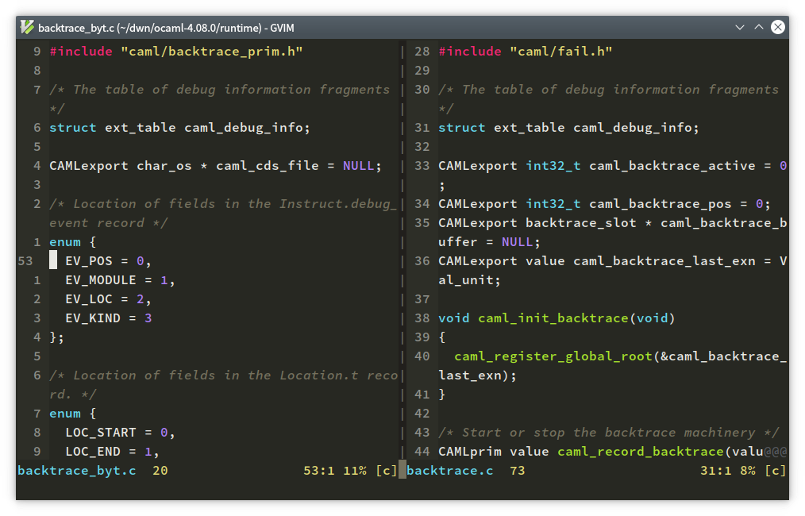

|
Summary
C语言tentative definition机制导致的兼容性问题
在把GCC升级到了10.0大版本之后，通过opam安装旧版本的OCaml编译器便出现了问题。测试了4.05,4.07,4.08版本，问题基本上是由C编写的OCaml字节码解释器中出现多重定义导致的。以OCaml
4.08版本为例，caml_debug_info符号在源码中有两处定义：

说起来这确实挺让人疑惑的，因为这两个文件都是源码包里自带，而不是自动生成的。查看开发者手写的Makefile也发现，这两个源文件都被编译和链接了。
这就更让人莫名其妙了。OCaml开发者这么多，不可能只有我一个人出这个问题，而且这个编译系统的问题很明显，多重定义也很容易就被发现了才对。
事实上去各个搜索引擎里都搜不到相关的信息，这种bug还是得去github和官方社区找。如果你也有同样的问题，可以看这几个链接：
所有OCaml 4.09.1版本之前的编译器都有这个问题。 简而言之，问题出在GCC10默认启用了-fno-common特性。这个特性使得所有没有初始化的全局变量被置于bss段，从而链接器无法合并这些变量，导致多重定义。
在C语言里，对于未初始化的全局变量，如果不用extern，那么应该是作为定义出现的。不过，以前的遗留代码总是喜欢省略掉extern，这在C语言标准里叫做tentative
definition，也就是在同一个编译单元中，全局变量可以有多个定义，只要最多出现一次初始赋值。换言之，这是对的：
int a;
int a;
int main() {
a = 1;
}
不过要注意，C++可没这种说法，上面的代码CPP编译器是不过的。这让我想起大一刚学C的时候，老师用C++编译器，我用C语言编译器，结果出了不少问题。Tentative Definition是其中的一个。 现在GCC10默认禁止了Tentative Definition，算来也是好事。
扯远了，简单来说，要解决最初的问题，要么你安装4.09.1之后的OCaml，要么你就在编译旧版本编译器的时候，加入-fcommon选项。
Articles are licensed by Creative Commons Attribution-NonCommercial-ShareAlike 4.0 International.
This page was rendered on 2022-01-23 using TeXmacs version 2.1.